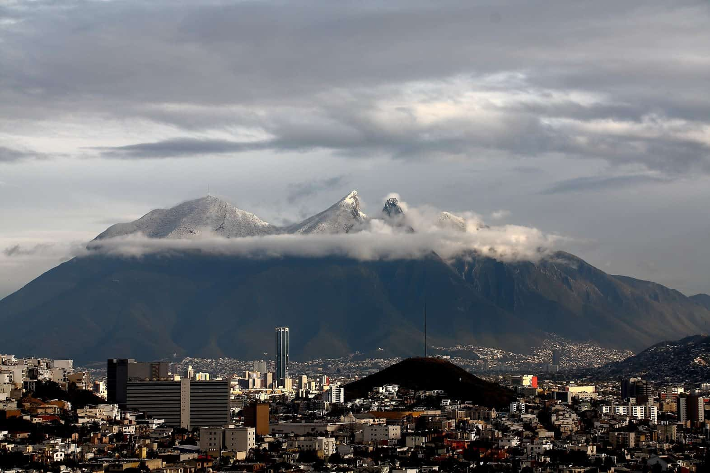
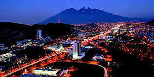
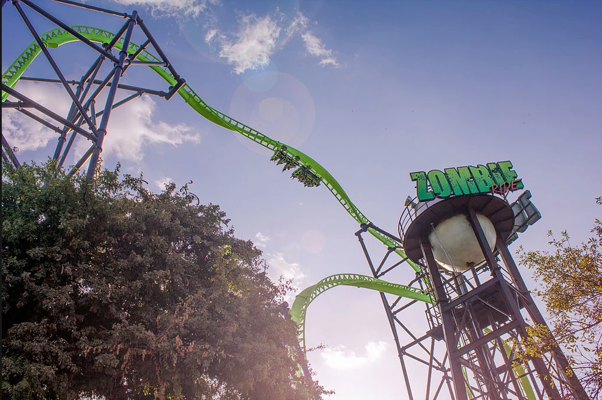
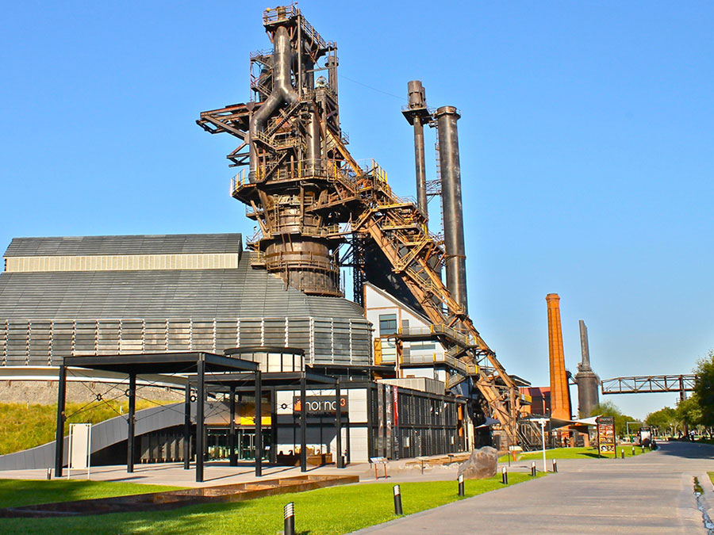
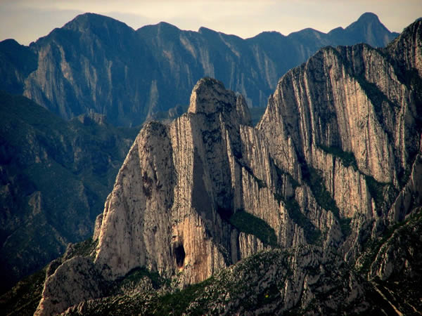
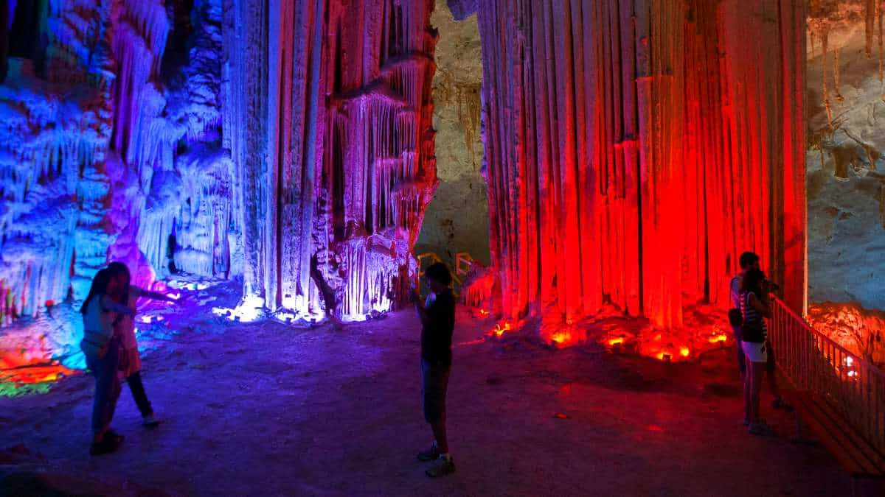

Monterrey, Nuevo León :)
Aqui te deleitas hasta con la carnita Asada

likes: 0
Cerro de la Silla
La montaña más emblemática de Monterrey, tiene cuatro picos, que son los que le dan la forma de la silla. De izquierda a derecha, estos picos se dividen en Pico Antena, que es donde está la antena. Pico norte, que es el más alto con 1,821 metros de altura. Pico sur, que es la ruta más peligrosa.

likes: 0
Monterrey de Noche
Vive la experiencia de conocer Monterrey y disfruta de los mejores lugares turísticos en Monterrey durante su faceta nocturna. Recorre los lugares más icónicos de la ciudad regia para conocer la vida nocturna. Paseo Santa Lucía es hermosa de día, pero de noche es espectacular.

likes: 0
Bosque Magico
"El parque de atracciones mecánicas más grande en el noreste de México. Cuenta con más de 30 atracciones (infantiles, familiares y extremas) que aseguran las emociones y diversión de sus visitantes.

likes: 0
Museo del acero
El Museo del acero se localiza en la ciudad de Monterrey, Nuevo Leon, está localizado en el Parque Fundidora; la museografía comprende diversas facetas que permiten la preservación del "Horno Alto". Su función es contar la historia de la industria siderúrgica y apoyar la educación formal e informal de las ciencias.

likes: 0
Cañon de la Huasteca
Este maravilloso sitio se localiza en el extremo suroeste de la zona metropolitana de Monterrey, en el municipio de Santa Catarina y forma parte del Parque Nacional Cumbres de Monterrey.

likes: 0